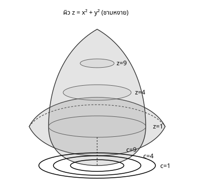

Maths Fundamentals for DS & CS — สัปดาห์ 04
จะเรียน:
$$ f : D \subseteq \mathbb{R}^2 \to \mathbb{R}, \qquad (x,y)\mapsto f(x,y) $$
แทนที่จะวาดผิวทั้งผิว เลือกค่าคงตัว $c$ แล้วถามว่าจุดไหนให้ $f(x,y)=c$ พอดี
$$ \text{level curve ที่ระดับ } c = \{(x,y) : f(x,y)=c\} $$
เส้นชิดกัน = ผิวชัน (เดินไม่ไกลค่าก็เปลี่ยน) · เส้นห่างกัน = ผิวแบน

โจทย์: $f(x,y)=x^2+y^2$ · $f(3,4)=f(0,5)=f(-3,-4)=25$
$$ c=1: x^2+y^2=1 \quad (\text{รัศมี }1) \qquad c=4: \text{รัศมี }2 \qquad c=9: \text{รัศมี }3 $$
อ่านความชัน: รัศมีห่างเท่ากัน ($1,2,3$) แต่ค่าเพิ่มไม่เท่ากัน ($1\to4$ เพิ่ม 3, $4\to9$ เพิ่ม 5) — ยิ่งห่างจากจุดกำเนิด ยิ่งชัน ตรงกับรูปชามที่ขอบชันกว่าก้น
โจทย์: $f(x,y)=x^2+4y^2$ ที่ $c=4,16,36$ → หารด้วย $c$ ก่อนวาดเสมอ
$$ \frac{x^2}{4}+y^2=1 \quad,\quad \frac{x^2}{16}+\frac{y^2}{4}=1 \quad,\quad \frac{x^2}{36}+\frac{y^2}{9}=1 $$
บนแกน $x$: ระยะห่าง $2,4,6$ (ห่างกัน 2) · บนแกน $y$: ระยะห่าง $1,2,3$ (ห่างกัน 1)
เส้นชิดกันในทิศ $y$ มากกว่าสองเท่า → ผิวชันในทิศ $y$ มากกว่า — ยืนยันด้วยตัวเลขจริงในหัวข้อ 2 ว่า $f_x=2x$ กับ $f_y=8y$
โจทย์: $f(x,y)=xy$ ที่ $c=0$: $xy=0 \Rightarrow x=0$ หรือ $y=0$
ที่ระดับ $c=0$: ได้แกน $x$ รวมกับแกน $y$ — เส้นตรงสองเส้นตัดกัน ไม่ใช่เส้นโค้ง
ที่จุดกำเนิดซึ่งเป็นจุดตัด คำถาม "เส้นสัมผัส level curve คือเส้นไหน" ตอบไม่ได้ — มีสองเส้นให้เลือก
สำคัญ: ในหัวข้อ 3 จะบอกว่า "เกรเดียนต์ตั้งฉากกับ level curve" — ประโยคนี้พูดไม่ได้ที่จุดซึ่ง level set ตัดกันเอง จุดแบบนี้จะกลับมาอีกครั้ง
ข้อมูลสามจุด $(1,2),(2,3),(3,5)$ ฟิตเส้น $\hat y=wx+b$
$$ L(w,b) = \sum_{i=1}^3 (y_i-wx_i-b)^2 $$
$$ L(1,1)=1 \qquad L(1,0)=6 \qquad L(2,0)=2 $$
เส้น $\hat y=x+1$ ($L=1$) ดีกว่าเส้นอื่นมาก
$$ L(w,b) = 14w^2+3b^2+12wb-46w-20b+38 $$
ตรวจคำตอบ: แทน $(1,1)$: $14+3+12-46-20+38=1$ ✓
พจน์ $12wb$ ทำให้ level curve ของ $L$ เป็นวงรีเอียง ไม่ใช่วงรีที่แกนตรงกับแกน $w,b$ — ภาพนี้เรียกว่า loss landscape
ทุกครั้งที่เห็นกราฟ "การเทรนโมเดล" สิ่งที่แสดงคือการเดินทางของจุดบนแผนที่ contour ของ loss function จุดปลายทางคือกลางวงในสุด
ถ้า level curve กลมเกือบเป็นวงกลม เดินลงหาจุดต่ำสุดง่าย (ทุกทิศทางเหมือนกัน) · ถ้าแบนยาวเหมือนหุบเขาแคบ เดินจะเซไปมาข้ามหุบเขาแทนที่จะเดินลงตามหุบเขา — นี่คือเหตุผลจริงที่มี feature scaling: ปรับสเกลให้วงรีแบนยาวกลายเป็นวงกลมมากขึ้น
ridge (สันเขา) และ plateau (ที่ราบ) ก็อ่านได้จากระยะห่างของเส้น contour โดยตรง
จบช่วงนี้ควรทำได้:
ตั้งค้างไว้: จุดที่ level set ตัดกันเอง (เช่นจุดกำเนิดของ $xy=0$) จะกลับมาสำคัญมากในหัวข้อ 3
การบ้าน: exercises/ex_04.md ข้อ 1–5 · ตัวอย่าง level set ที่ขาดเป็นสองท่อนของ $xy=6$ มีรายละเอียดเต็มใน note